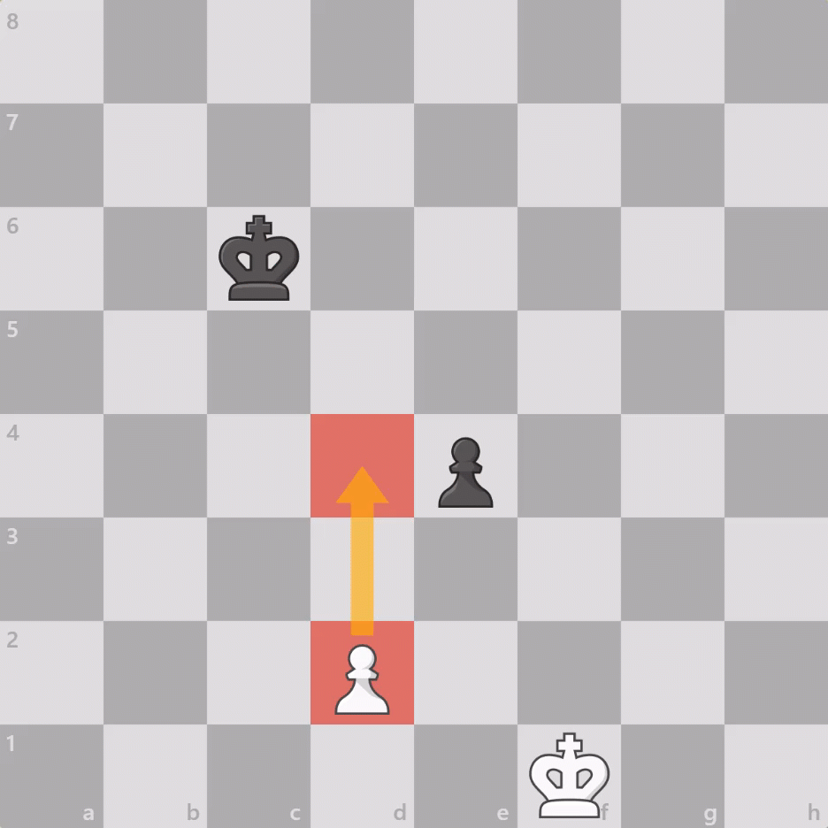
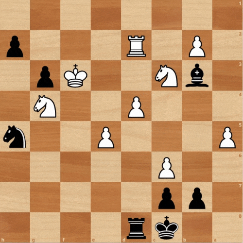
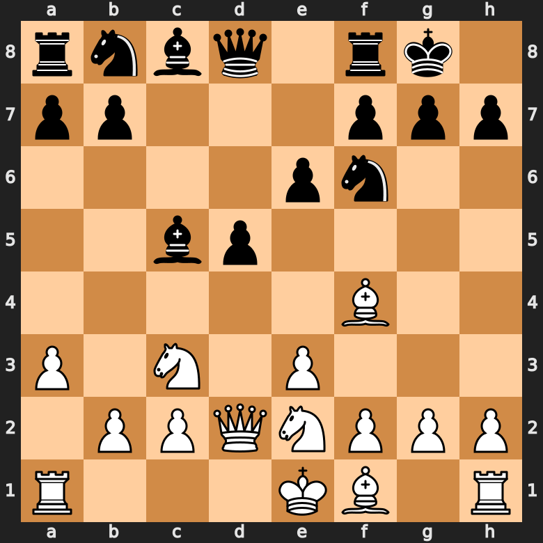
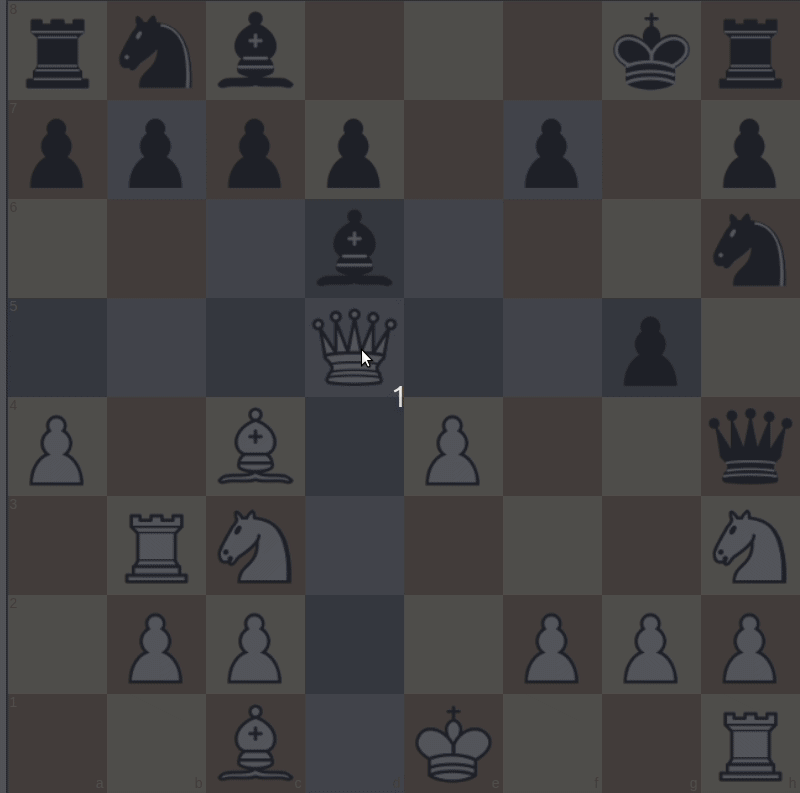

There are rules in chess that you have to follow to make the game functional. Here are a list of chess rules:
Below is a gif showing the en passant capture:
Below is a gif showing a pawn promoting to a queen
Below is a gif showing castling
Below is a gif showing king getting checked by multiple pieces
